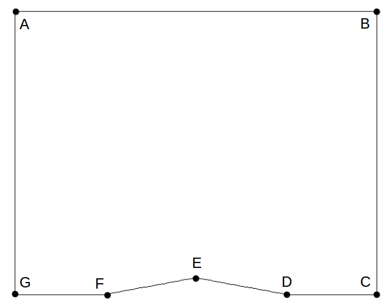

In this project, 2-D Euler solver which utilizes the AUSMPW+ scheme (Advection Upstream Splitting Method - Pressure Weighted) has been developed. The developed 2-D Euler code was verified for a test case of a flowfield over the top half of a 10 deg. diamond airfoil.
The 2-D, unsteady Euler Equations will be solved. The equations will be marched forward in time until a steady state solution is achieved. The transformed 2-D Euler equations can be written:
where the transformed state and inviscid flux vectors are
and
Here the total energy per unit volume is defined by:
and the stagnation enthalpy per unit mass is:
The transformed velocity component (Contravariant velocities) in the generalized coordinates is determined as a function of \(u\) and \(v\) with the grid metrics as follows:
This project analyze the top half of a 10 deg. diamond airfoil so the location of point E is (x,y) = (0.5, 0.0882). Each grid point can be describd by (x,y) location or (\(i\), \(j\)) location where the \(i\) index is in the \(\xi\) direction and the \(j\) index is in the \(\eta\) direction. The grid will consist of 71 points in the “\(i\)” direction and 48 points in the “\(j\)” direction. The inverse grid metrics must be evaluated at every grid point in the computational domain (including the boundaries). Use 2nd order accurate, central differences for interior points and 2nd order accurate, one-sided differences for boundary points. After the inverse metrics are computed, the grid Jacobian and grid metrics must be computed and stored at every location (including the boundaries)
{kind=link}